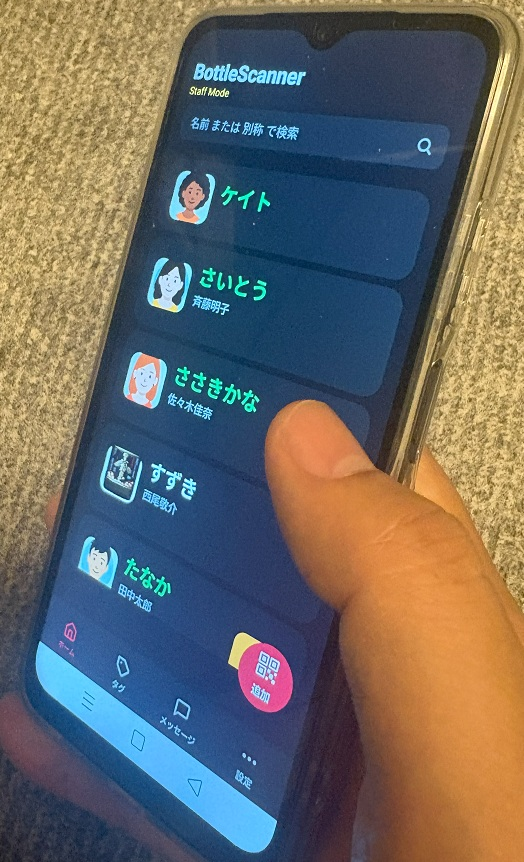

独自赤外線技術によるボトル管理システム
飲食店におけるキープボトル捜索の課題に対し、 独自開発した赤外線タグ技術を用いて、 低コストかつ高速なボトル捜索システムを実現しました。

概要
飲食店では、お客様のキープボトルを素早く提供することが求められます。 しかし、多数のボトルの中から目的の1本を探し出す作業には時間がかかり、 スタッフの負担やお客様満足度の低下につながっていました。
本システムは、独自開発した赤外線タグ技術を用いて、 多数のボトルの中から目的のボトルを短時間で発見できるようにしたものです。
課題
キープボトル文化のある飲食店では、来店したお客様のボトルを素早く提供することが重要です。 ボトル捜索に時間がかかると、そのお客様への提供が遅れるだけでなく、 スタッフが他の接客対応に回れなくなるという問題がありました。
特に小規模店舗では、限られた人数で接客を行うため、 ボトル捜索にかかる数秒から数十秒の差が、店舗全体の接客効率に影響します。
既存技術の課題
物品捜索技術としては、BLEタグやRFIDが一般的です。 しかし、飲食店のキープボトル管理用途では、それぞれに課題がありました。
- BLE：大量のタグの中から目的物を瞬時に特定する用途には向きにくい
- RFID：技術的には実現可能だが、読取装置やシステム導入コストが高い
- 小規模店舗：導入コストが店舗規模に対して過大になりやすい
そのため、低コストで大量のタグの中から目的物を素早く探し出せる、 新しい方式が必要でした。
提案
既存技術をそのまま利用するのではなく、 独自の赤外線タグ方式を新たに考案しました。
赤外線は低コスト化に向いている一方で、光学検知であるため遮蔽による不検知が発生しやすく、 またタグ側には長期間の電池駆動が求められます。
本システムでは、これらの課題に対して独自の通信方式と検出制御を組み合わせ、 店舗利用に耐えるボトル捜索システムとして実用化しました。
技術的な特徴
本システムでは、独自の赤外線タグ技術により、 大量のタグの中から目的の1つを短時間で特定できる構成を実現しています。
赤外線方式で問題となりやすい遮蔽や消費電力の課題に対しても、 用途に合わせたハードウェア設計と制御方式により対応しています。
開発内容
タグ捜索技術だけでなく、店舗で実際に利用するためのハードウェア、スマホアプリ、 クラウドシステムまで一貫して開発しました。
- 独自赤外線タグの開発
- タグ捜索装置の開発
- スマホアプリの開発
- クラウドシステムの開発
- 量産を見据えたハードウェア設計
- 店舗運用を想定したシステム設計

成果
本システムは現在、複数店舗にて実証運用を行っています。
従来はコストや性能面で実用化が難しかった 「低コストで大量のボトルから目的物を素早く探し出す」 という課題に対し、独自技術による解決を実現しました。
また、単にボトルを探すだけでなく、 来店客への提供スピード向上や、店舗スタッフの接客効率向上にもつながるシステムとなっています。
担当範囲
本事例では、顧客の現場課題の整理から、独自技術の考案、 ハードウェア、スマホアプリ、クラウドシステムまで一貫して担当しました。
- 課題分析・システム提案
- 独自赤外線タグ技術の考案
- タグおよびタグ捜索装置の回路設計・基板設計
- ファームウェア開発
- スマホアプリ開発
- クラウドシステム開発
- 試作・量産対応
- 実証運用対応
この事例で示せること
本事例は、単なるボトル管理システムではありません。 既存技術ではコストや性能面で実現が難しかった課題に対し、 独自技術を考案し、ハードウェアからクラウドシステムまで一貫して開発した事例です。
既存製品では実現できない課題や、 新しい技術的アプローチが必要な案件についても対応可能です。